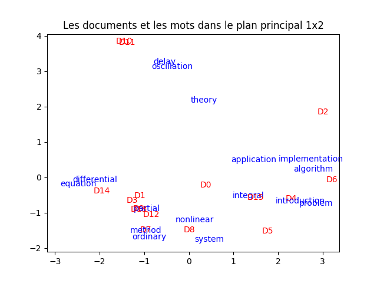

Réduction de dimension : analyse de la sémantique latente
Dans ce TP, nous appliquons l'analyse en composantes principales à des textes. Cette méthode se nomme « analyse de la sémantique latente », latent semantic analysis (LSA) en anglais. On utilisera cet acronyme dans ce TP. Il est indispensable que le TP sur l'ACP ait été réalisé avant celui-ci. Tout a été expliqué en cours.
On pourra consulter mes notes de cours de fouille de données pour une brève présentation de la cette méthode (chapitre 11).
À l'issue de ce TP, vous m'envoyez par email un compte-rendu (format pdf) indiquant la réponse aux questions qui sont posées. Vous m'envoyez également un fichier python réalisant toutes les manipulations de ce TP : je dois pouvoir exécuter ce fichier en tapant python3 nom-de-votre-fichier.py et reproduire vos résultats. Cette exécution ne doit pas provoquer d'erreur de python. Remarque : un notebook ne convient pas.
Introduction
L'objectif de la LSA est le même que celui d'une ACP : fournir une représentation dans un espace de petite dimension (un plan) d'un ensemble de données. Ici les données sont des textes. Ce qui est remarquable est que cette représentation en 2 dimensions respecte dans une certaine mesure le sens des textes et des mots qui les composent. Projetés dans ce plan, la distance euclidienne rend assez bien compte du sens des textes et des mots, c'est-à-dire leur sémantique.
Un petit exemple pour s'initier à la LSA
On commence par un petit exemple composé de quelques textes ne comportant que quelques mots, tiré de la publication Berry, Dumais, O'Brien Using Linear Algebra for Intelligent Information Retrieval, rapport de recherche CS-94-270, décembre 1994. La très petite taille de cet exemple permet de l'explorer sans trop de difficultés, sans être noyé dans de grandes quantités de données. Il montre aussi que la LSA peut fonctionner même sur un petit exemple.
Représentation des textes
Pour réaliser une ACP, il faut disposer d'un tableau de données ou chaque donnée est représentée par la valeur de ses attributs.
Ici une donnée est un texte. Il faut donc représenter un texte avec un certain nombre d'attributs, un même jeu d'attributs pour tous les textes que l'on souhaite traiter.
Pour cela, commeon l'a vu en cours, on utilise une représentation TF.IDF.
On considère 17 documents textuels qui sont des titres d'articles de revue scientifique. Ces 17 documents sont les suivant :
- A course of integral equations
- Attractors for semigroups and evolution equations
- Automatic differentiation of algorithms: theory, implementation, and applications
- Geometrical aspects of partial differential equations
- Ideals, varieties, and algorithms -- an introduction to computaional algebraic geometry and commutative algebra
- Introduction to Hamiltonian dynamical systems and the N-body problem
- Knapsack problems: algorithms and computer implementations
- Methods of solving Singular Systems of Ordinary Differential Equations
- Nonlinear systems
- Ordinary Differential equations
- Oscillation theory for neutral differential equations with delay
- Oscillation theory of delay differential equations
- Pseudo-differential operators and nonlinear partial differential equations
- Sinc methods for quadrature and differential equations
- Stability of stochastic differential equations with respect to semi-martingales
- The boundary integral approach to static and dynamic contact problems
- The double Mellin-Barnes type integrals and theory applications to convolution theory
On retire les mots inutiles (stopwords), on lemmatise et on ne conserve que les mots qui appaaissent dans au moins deux documents. Cela nous donne ce vocabulaire : mots = ["algorithm", "application", "delay", "differential", "equation", "implementation", "integral", "introduction", "method", "nonlinear", "ordinary", "oscillation", "partial", "problem", "system", "theory"]
.
On construit la matrice de fréquence des termes tf. Je vous donne le bout de python qui le fait.
tf = np.zeros ((N, P)) tf [0, [4, 6]] = 1 tf [1, 4] = 1 tf [2, [0, 1, 5, 15]] = 1 tf [3, [3, 4, 12]] = 1 tf [4, [0, 7]] = 1 tf [5, [7, 13, 14]] = 1 tf [6, [0, 5, 13]] = 1 tf [7, [3, 4, 8, 10, 14]] = 1 tf [8, [9, 14]] = 1 tf [9, [3, 4, 10]] = 1 tf [10, [2, 3, 4, 11, 15]] = 1 tf [11, [2, 3, 4, 11, 15]] = 1 tf [12, [3, 4, 9, 12]] = 1 tf [13, [3, 4, 8]] = 1 tf [14, [3, 4]] = 1 tf [15, [6, 13]] = 1 tf [16, [1, 6, 15]] = 1
La iè ligne de tf correspond au iè document, la jè colonne correspond au jè mot du vocabulaire.
Si tf [i, j] est non nul, c'est que le mot j est présent dans le document i. Ici, les documents étant très courts, un mot apparaît 0 ou 1 fois dans un document. En général, il peut apparaître plusieurs fois aussi de manière générale, cette matrice peut contenir d'autres entiers que 0 et 1.
À faire :
- calculer l'IDF de chaque terme.
- Calculer ensuite la représentation TF.IDF de chacun des documents. On met cette représentation dans une matrice.
- Normer chaque ligne (= document).
Nous avons maintenant une matrice tf_idf qui représente les 17 documents.
ACP
À faire : en suivant (scrupuleusement) la démarche vue dans le TP précédent sur l'ACP, réaliser une ACP de cette matrice tf_idf. Réaliser une visualisation des documents dans le plan principal. Vous devez obtenir quelque chose comme cela :

Il peut arriver que la figure obtenue soit symétrique horizontalement ou verticalement à celle-ci. C'est normal puisque la décomposition spectrale est définie au signe près.
Petit truc : pour réaliser la figure ci-dessus, j'ai légérement modifié les coordonnées auxquelles sont affichés les chaînes de caractères pour la rendre plus lisible. En effet, il arrive fréquemment que plusieurs chaînes de caractères se mélangent car leurs coordonnées sont proches. Pour réaliser cette légère modification, j'ajoute une petite quantité aléatoire, différente pour chacune des coordonnées, tiréee d'une loi normale d'écart-type 0,1 (valeur à ajuster en fonction de l'ampleur des coordonnées). Cette technique est très utile et très utilisée en fouille de données. Elle se nomme en anglais jittering ; en français, on parle de « bruitage ». J'applique cette technique à toutes les figures réalisés dans ce TP.
À faire : analyser cette figure en comparant la position des documents (et surtout la distance entre les documents dans ce plan) et les mots qui les compose. Faites (dans votre tête) un partitionnement selon ce que vous voyez (pas forcément comme les k-moyennes fonctionnent donc). Que constatez-vous ?
On considère maintenant la transposée de la matrice TF.IDF. Celle-ci décrit les mots en fonction des documents dans lesquels ils apparaissent.
À faire : en suivant la démarche vue dans le TP précédent sur l'ACP, réaliser une ACP de la transposée de la matrice tf_idf. Réaliser une visualisation des mots dans le plan principal. Vous devez obtenir quelque chose comme cela :
À faire : analyser cette figure en comparant la proximité entre les mots et leur sens d'une part, leur apparition dans les documents d'autre part. À nouveau, faites (dans votre tête) un partitionnement selon ce que vous voyez (pas forcément comme les k-moyennes fonctionnent donc). Que constatez-vous ?
Il est très intéressant de projeter les documents et les mots dans le même plan. À faire : faites-le, en indiquant les documents et les mots avec des couleurs différentes. Vous devez obtenir quelque chose comme ceci :

À faire : analyser cette figure en comparant la propximité entre les mots et les documents, en fonction des mots apparaissant dans chacun des dcouments. Encore une fois, faites (dans votre tête) un partitionnement selon ce que vous voyez (pas forcément comme les k-moyennes fonctionnent donc). Que constatez-vous ?
ACP par SVD
Ci-dessus, nous avons effectué deux ACP pour atteindre notre objectif, l'une considérant des documents décrits par les mots qui les composent, l'autre considérant des mots décrits par les documents qui les contiennent. Comme on l'a vu en cours, la décomposition en valeurs singulières (SVD) permet d'obtenir le même résultat en effectuant une seule opération. On reprend donc tout ce que l'on a fait avec cette technique.
On fait une SVD en partant de la même matrice que pour l'ACP, c'est-à-dire la représentation TF.IDF. Je suppose que vous avez nommé cet objet tfidf. Pour réaliser la SVD, on fait comme suit :
from scipy.linalg import svd U, Sigma, V = svd (tfidf)
On utilise ensuite U et Sigma pour projeter les documents, et V et Sigma pour projeter les documents.
Les coordonnées dans le plan principal des documents sont Sigma [0] * U [:, 0] et Sigma [1] * U [:, 1].
Celles des mots sont Sigma [0] * V. transpose () [0, :] et Sigma [1] * V [1, :].
À faire : faites tout ce qui vient d'être expliqué. Vous devez obtenir ce graphique :
Exploitation de la projection
L'une des utilisations de la SVD concerne la recherche de documents selon un certain critère : soit étant donné un document, trouver les documents qui traitent du même sujet, soit étant donné un mot, trouver les documents pour lesquels ce mot caractérise le sujet.
Pour cela, on recherche les plus proches voisins : étant donné un document, quels sont les documents qui sont ses plus proches voisins ? Étant donné un mot, quels sont les documents qui sont ses plus proches voisins ?
Toujours à l'aide de la méthodes plus proches voisins, on peut aussi rechercher les mots qui sont proches les uns des autres. Ce peut-être des synonymes par exemple, ou plus généralement, ce sont des mots utilisés dans le même contexte.
À faire :
- étant donné un mot, trouver les k documents les plus proches.
- Étant donné un mot, trouver les k mots les plus proches.
- Étant donné un document, trouver les k documents les plus proches.
À chaque fois, faites quelques essais.